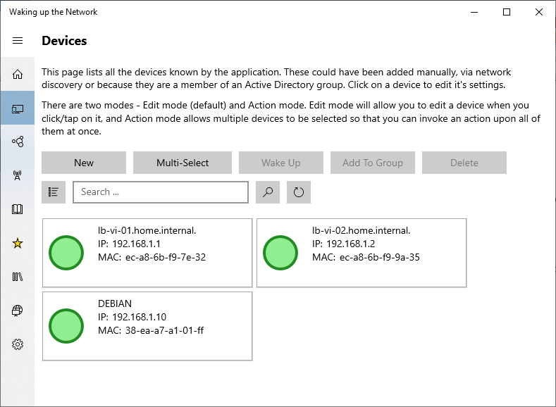
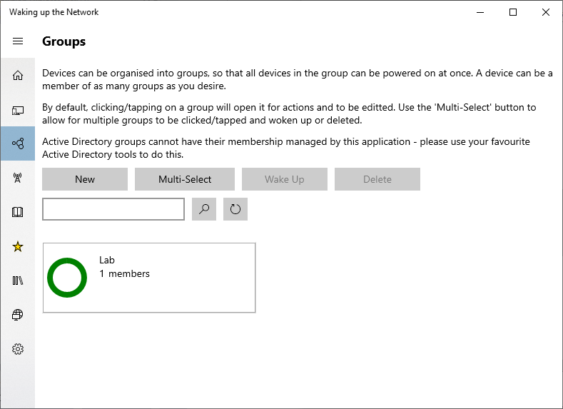
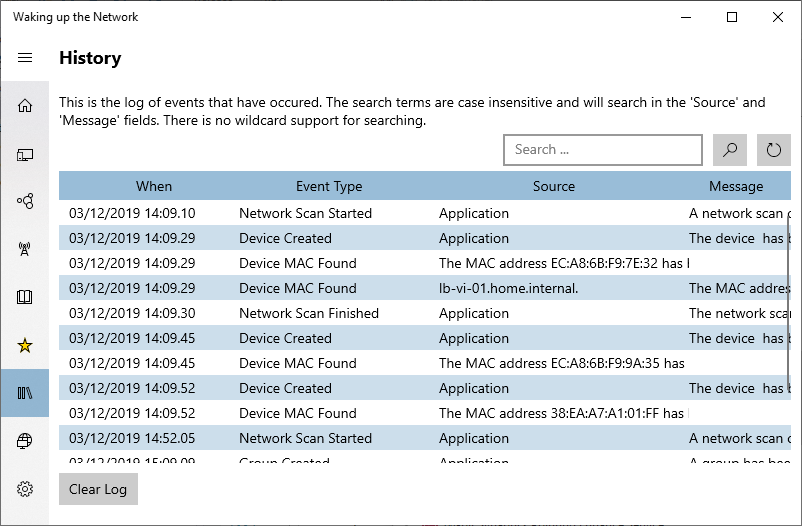
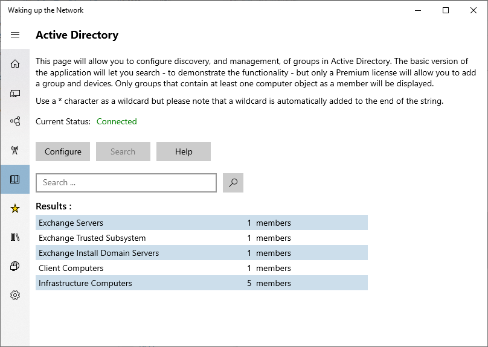
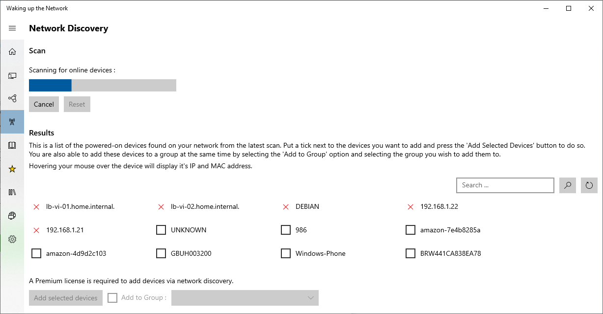

Compared with other apps designed for waking device on a LAN, this FREE edition kills every other that I have tried. The functions available and the display of the status of device are so much better than the alternatives. I shall be paying the small amount for the upgrade just out of interest to see what else I may be able to use.
See your devices
- Online Status
- Resolved DNS addresses
- IP address
- MAC address

Organise your devices into Groups
- Member status
- Wake up the whole group at once
- Link to Active Directory groups

Full Audit
- Track application actions
- When devices come online
- When devices go offline

Link to Active Directory
- Link to Active Directory groups
- Manage the groups solely through AD tools
- Wake up the AD groups in one go !

Network Discovert
- Find powered on devices on your network
- Automatically discovers MAC and DNS information
- Add as devices and optionally to a group

Reviews
Copyright (c) 2021, Neale Lonslow; all rights reserved.
Template by Bootstrapious. Ported to Hugo by DevCows.